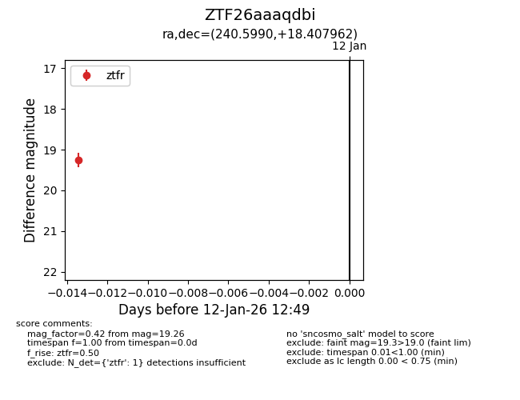
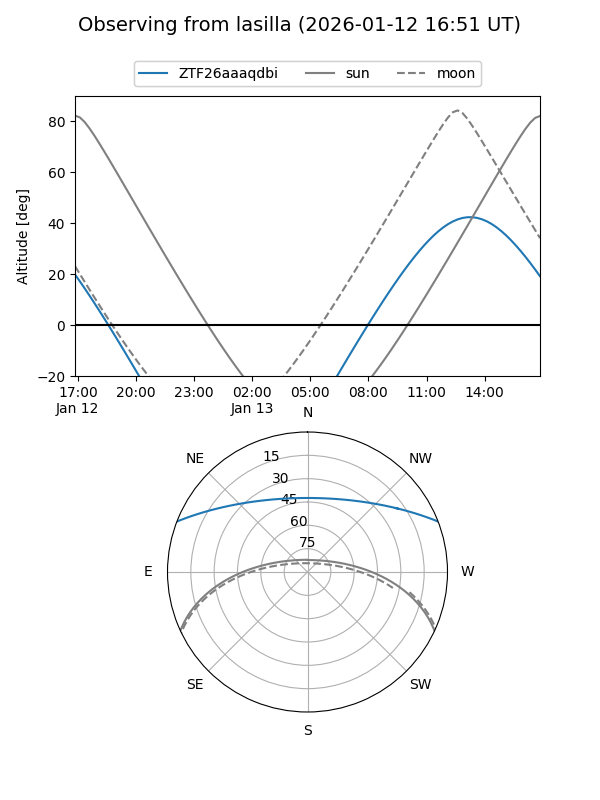
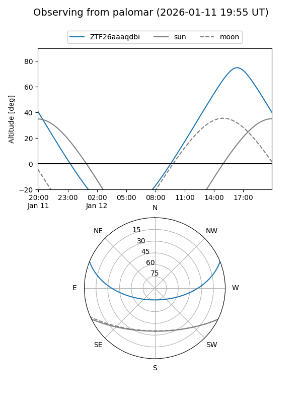

ZTF26aaaqdbi
Target ZTF26aaaqdbi at 2026-01-12 12:50
Aliases and brokers:
FINK: link
Lasair: link
ALeRCE: link
alt names
ZTF26aaaqdbi (ztf,fink_ztf)
Coordinates:
equatorial (ra, dec) = 240.5990,+18.40796
equatorial (HMS+DMS) = 16:02:23.76,+18:24:28.66
galactic (l, b) = (32.1227,+45.38848)
Flags:
Photometry:
last ztfr=19.26
1 ztfr detections
Lightcurve

Visibility


Additional plots